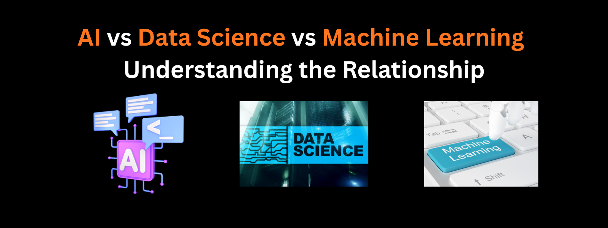

AI vs Data Science vs Machine Learning: Understanding the Relationship

Key Insight: While often used interchangeably, AI, Data Science, and Machine Learning represent distinct but deeply interconnected disciplines. Understanding their relationships is crucial for navigating today's technology landscape effectively.
In the rapidly evolving world of technology, three terms dominate conversations about innovation and digital transformation: Artificial Intelligence (AI), Data Science, and Machine Learning (ML). While these fields are deeply interconnected and often work in tandem, they represent distinct disciplines with unique focuses, methodologies, and applications.
According to a 2023 MIT Technology Review study, confusion between these terms leads to significant misunderstandings in business strategy and technical implementation. This comprehensive guide will clarify the relationships and distinctions between these transformative fields.
Defining the Core Concepts
🤖 Artificial Intelligence (AI)
AI is the broadest concept - it refers to the capability of machines to imitate intelligent human behavior, including learning, reasoning, problem-solving, perception, and linguistic intelligence. The term was first coined by John McCarthy in 1956 as "the science and engineering of making intelligent machines."
Reference: McCarthy, J., Minsky, M. L., Rochester, N., & Shannon, C. E. (1956). A Proposal for the Dartmouth Summer Research Project on Artificial Intelligence.
🧠 Machine Learning (ML)
ML is a subset of AI that focuses on developing algorithms and statistical models that enable computers to improve their performance on specific tasks through experience, without being explicitly programmed. As defined by Tom Mitchell: "A computer program is said to learn from experience E with respect to some class of tasks T and performance measure P, if its performance at tasks in T, as measured by P, improves with experience E."
Reference: Mitchell, T. M. (1997). Machine Learning. McGraw-Hill.
📊 Data Science
Data Science is an interdisciplinary field that uses scientific methods, processes, algorithms, and systems to extract knowledge and insights from structured and unstructured data. It combines domain expertise, programming skills, and knowledge of mathematics and statistics. Data Science focuses on the entire data lifecycle, from collection and cleaning to analysis and interpretation.
Reference: Dhar, V. (2013). Data Science and Prediction. Communications of the ACM.
The Hierarchical Relationship
The Technology Hierarchy
🏛️ Artificial Intelligence
The overarching field of creating intelligent machines
↓
🤖 Machine Learning
Subset of AI focused on learning from data
↓
🧠 Deep Learning
Subset of ML using neural networks
🔄 Data Science
Interdisciplinary field that uses AI/ML as tools
How They Work Together: The Symbiotic Relationship
The Data Science → Machine Learning Pipeline
Data Science provides the foundation for Machine Learning. The process typically follows this pipeline:
- Data Collection & Cleaning (Data Science): Gathering and preparing raw data
- Exploratory Data Analysis (Data Science): Understanding patterns and relationships
- Feature Engineering (Data Science): Creating meaningful input variables
- Model Training (Machine Learning): Algorithms learn from prepared data
- Model Evaluation (Both): Assessing performance and accuracy
- Deployment & Monitoring (AI Engineering): Implementing in production systems
Machine Learning as AI's Implementation Engine
While traditional AI relied on hard-coded rules and expert systems, Machine Learning represents a paradigm shift. Instead of programming every possible scenario, ML algorithms learn patterns from data, making AI systems more adaptable, scalable, and capable of handling complex, real-world problems.
A 2024 Stanford AI Index Report found that ML-driven AI systems have achieved human-level performance in specific tasks like image recognition and language translation, demonstrating the power of this approach.
Comprehensive Comparison
Comparative Analysis
Real-World Applications and Case Studies
Healthcare: Revolutionizing Patient Care
Data Science analyzes electronic health records to identify population health trends and risk factors. Machine Learning develops predictive models for disease diagnosis and treatment outcomes. AI creates intelligent systems that assist radiologists in detecting anomalies and surgeons in planning complex procedures.
Case Study: Google's DeepMind Health developed an AI system that can detect over 50 eye diseases with 94% accuracy, matching world-leading experts (Nature Medicine, 2023).
E-commerce: Personalizing the Shopping Experience
Data Science analyzes customer behavior, purchase patterns, and market trends. Machine Learning powers sophisticated recommendation engines and demand forecasting systems. AI creates virtual shopping assistants and chatbots that provide personalized customer service.
Case Study: Amazon's recommendation engine, driven by ML algorithms, is estimated to drive 35% of total revenue by suggesting relevant products to customers.
Finance: Transforming Risk Management
Data Science processes vast amounts of transaction data to identify patterns and anomalies. Machine Learning develops fraud detection models and credit scoring systems. AI creates algorithmic trading systems and robo-advisors that automate investment decisions.
Career Paths and Skill Requirements
Understanding these distinctions is crucial for career planning and skill development in the tech industry:
Career Focus Areas
AI Engineer
- Focuses on creating intelligent systems
- Strong programming and algorithms
- Knowledge of NLP, computer vision
- System architecture design
Data Scientist
- Extracts insights from complex data
- Strong statistical background
- Data visualization expertise
- Domain knowledge application
ML Engineer
- Builds and deploys ML models
- Strong mathematical foundation
- Model optimization skills
- Production system deployment
The Future: Convergence and Specialization
As technology evolves, we're witnessing both convergence and specialization in these fields:
Convergence Trends
- AutoML platforms are making machine learning more accessible to data scientists
- MLOps practices are bridging the gap between data science and engineering
- Explainable AI (XAI) is creating common ground between technical and business stakeholders
Emerging Specializations
- AI Ethics and Governance: Ensuring responsible AI development and deployment
- Data Engineering: Building robust data infrastructure for AI systems
- MLOps Engineering: Streamlining the deployment and monitoring of ML models
The Essential Insight: AI represents the ambition of creating intelligent systems, Machine Learning provides the methodology for achieving that intelligence through data, and Data Science offers the foundation of understanding and preparing that data. The most successful organizations understand how to leverage all three in harmony.
Conclusion
Understanding the distinctions and relationships between Artificial Intelligence, Data Science, and Machine Learning is no longer just academic—it's essential for making informed decisions in technology strategy, career development, and business innovation. While these fields will continue to evolve and their boundaries may shift, their core relationships will remain fundamental to how we create value from data and intelligence.
As Andrew Ng famously stated, "AI is the new electricity." Just as electricity transformed countless industries, AI—powered by Machine Learning and enabled by Data Science—is poised to redefine what's possible across every sector of our economy and society.
Ready to Dive Deeper?
Explore more articles on AI, Data Science, and emerging technologies in our blog section or get in touch to discuss how these technologies can transform your projects.